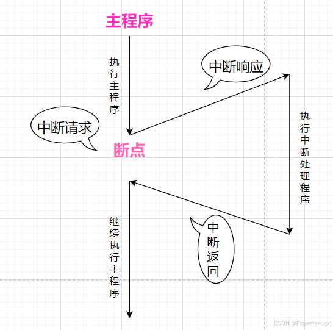
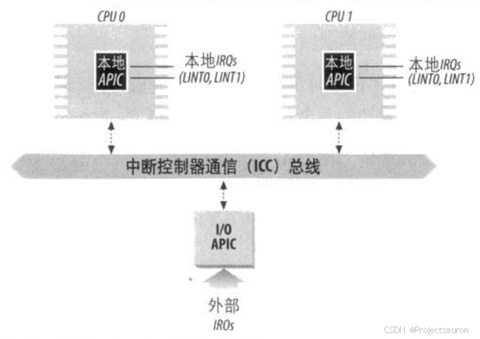
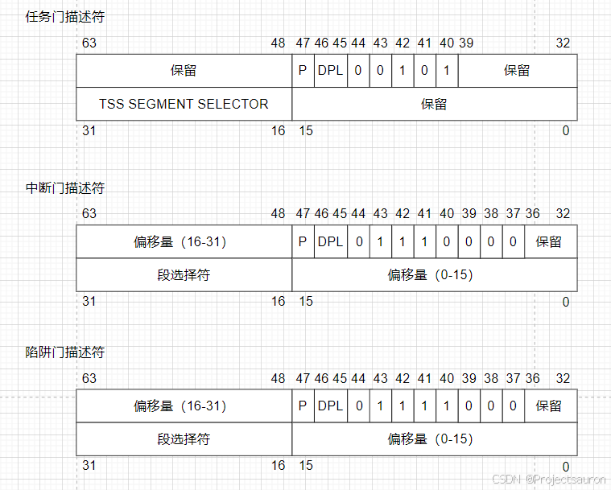

Linux 中断机制（一）之中断和异常
@toc
一、什么是中断
1、概述
中断（interrupt）是指在 CPU 正常运行期间， 由外部或内部事件引起的一种机制。 当中断发生时，CPU 会停止当前正在执行的程序，并转而执行触发该中断的中断处理程序。处理完中断处理程序后，CPU 会返回到中断发生的地方， 继续执行被中断的程序。中断机制允许 CPU 在实时响应外部或内部事件的同时，保持对其他任务的处理能力。
中断的流程图如下：

2、中断的分类
中断通常被定义为一个事件，该事件改变处理器执行的指令顺序。这样的事件与 CPU 芯片内外部硬件电路产生的电信号相对应。
中断通常分为同步（synchronous）中断和异步（asynchronous）中断：
- 同步中断是当指令执行时由 CPU 控制单元产生的，之所以称为同步，是因为只有在一条指令终止执行后CPU才会发出中断；
- 异步中断是由其他硬件设备依照 CPU 时钟信号随机产生的。
在 Intel 微处理器手册中,把同步和异步中断分别称为异常（exception）和中断（interrupt）我们也采用这种分类，当然有时我们也用术语“中断信号”指这两种类型(同步及异步)。
二、中断和异常
1、中断和异常
Intel 文档把中断和异常分为以下几类：
- 中断：
- 可屏蔽中断（maskabie interrupt）
I/O 设备发出的所有中断请求（IRQ）都产生可屏蔽中断。可屏蔽中断可以处于两种状态：屏蔽的（masked）或非屏蔽的（unmasked），一个屏蔽的中断只要还是屏蔽的，控制单元就忽略它。==要根据中断允许标志的设置来判断 CPU 是否能响应中断请求==。 - 非屏蔽中断（nonmakable interrupt）
只有几个危急事件（如硬件故障）才引起非屏蔽中断。非屏蔽中断总是由 CPU 辨认。==不受中断允许标志的影响，不能用软件进行屏蔽==。
可屏蔽的中断可以被阻塞，使用 x86_64 的指令sti和cli。这两个指令修改了在中断寄存器中的 IF 标识位。sti指令设置 IF 标识，cli指令清除这个标识。不可屏蔽的中断总是被报告。通常，任何硬件上的失败都映射为不可屏蔽中断。我们可以在 Linux 内核代码中找到这两个指令的使用：
- 可屏蔽中断（maskabie interrupt）
1 | static inline void native_irq_disable(void) |
- 异常：
- 处理器探测异常（processor-detected exception）
当 CPU 执行指令时探测到的一个反常条件所产生的异常。可以进一步分为三组，这取决于 CPU 控制单元产生异常时保存在内核态堆栈 eip 寄存器中的值。- 故障（fault）
通常可以纠正：一旦纠正，程序就可以==在不失连贯性的情况下重新开始==。保存在 eip 中的值是引起故障的指令地址。因此，当异常处理程序终止时，那条指令会被重新执行。 - 陷阱（trap）
在陷阱指令执行后立即报告；==内核把控制权返回给程序后就可以继续它的执行而不失连贯性==。保存在 eip 中的值是一个随后要执行的指令地址。只有当没有必要重新执行已终止的指令时，才触发陷阱。陷阱的主要用途是为了调试程序。在这种情况下，中断信号的作用是通知调试程序一条特殊指令已被执行（例如到了一个程序内的断点）。一旦用户检查到调试程序所提供的数据，它就可能要求被调试程序从下一条指令重新开始执行。 - 异常中止（abort）
发生一个严重的错误：控制单元出了问题，不能在 eip 寄存器中保存引起异常的指令所在的确切位置。异常中止用于==报告严重的错误==，如硬件故障或系统表中无效的值或不一致的值。由控制单元发送的这个中断信号是紧急信号，用来把控制权切换到相应的异常中止处理程序，这个异常中止处理程序除了强制受影响的进程终止外，没有别的选择。
- 故障（fault）
- 编程异常（programmed exception）
在编程者发出请求时发生。是由int或int3指令触发的，当into（检查溢出）和bound（检查地址出界）指令检查的条件不为真时，也引起编程异常。控制单元把编程异常作为陷阱来处理。编程异常通常也叫做软中断（sofware interrupt）这样的异常有两种常用的用途：执行系统调用及给调试程序通报一个特定的事件。
- 处理器探测异常（processor-detected exception）
每个中断和异常是由 0~255 之间的一个数来标识。因为一些未知的原因，Intel 把这个 8 位的无符号整数叫做一个向量（vector）。非屏蔽中断的向量和异常的向量是固定的，而可屏蔽中断的向量可以通过对中断控制器的编程来改变。
中断和异常的区别：中断是由硬件引起的；异常则发生在编程失误而导致错误指令，或者在执行期间出现特殊情况必须要靠内核来处理的时候（比如缺页）。
2、中断的上下部
中断的执行需要快速响应， 但并不是所有中断都能迅速完成。 此外， Linux 中的中断不支持嵌套， 意味着在正式处理中断之前会屏蔽其他中断， 直到中断处理完成后再重新允许接收中断，如果中断处理时间过长， 将会引发问题。
这里以炒菜的过程中接电话进行举例：当你正在炒菜的时候，菜正在锅里翻炒着。 突然， 你的手机响起，打破了你正常的炒菜流程，接电话的时间很短并不会对炒菜产生很大的影响， 而接电话的时候可能就有问题了，因为菜可能会因为没来得及翻面而炒糊了。
为了让系统可以更好地处理中断事件， 提高实时性和响应能力， 将中断服务程序划分为上下文两部分：
上半部：上半部是中断处理函数的一部分，它主要处理一些紧急且需要快速响应的任务。 中断上文的特点是执行时间较短，旨在尽快完成对中断的处理。这些任务可能包括保存寄存器状态、更新计数器等， 以便在中断处理完成后能够正确地返回到中断前的执行位置。
上半部的执行是在中断上下文中进行的，它运行在中断服务例程（ISR）所在的内核线程上下文中，而不是用户进程的上下文中。因此，上半部的执行是在中断被触发时立即执行的，不会被其他中断打断。下半部是中断处理函数的另一部分，它相对于上半部来说是延迟执行的。下半部的目的是在中断被触发后，尽快将一些不紧急或者耗时的处理工作延后执行，以减轻上半部的负担，从而使中断处理更加高效。
下半部的执行是在非中断上下文中进行的，它不会被其他中断打断，并且可以访问用户空间的内存。下半部的执行可以在任意时刻进行，但是需要注意的是，下半部执行的时间越长，会导致中断延迟更长，从而影响系统的响应性能。下半部一般包括以下几种形式：- 内核线程：创建一个新的内核线程来执行一些独立于中断的任务。
- 任务队列：将需要执行的任务放入任务队列中，由内核调度器来选择适当的时机执行。
- 工作队列：类似于任务队列，但是工作队列可以绑定到某个 CPU，以提高处理效率。
3、异常
80x86 微处理器发布了大约 20 种不同的异常（依赖于体系结构）。内核必须为每种常提供一个专门的异常处理程序。对于某些异常，CPU 控制单元在开始执行异常处理程序前会产生一个硬件出错码（hardware error code)，并且压入内核态堆栈。
下面的列表给出了在 80x86 处理器中可以找到的异常的向量、名字、类型及其简单描述。更多的信息可以在 Intel 的技术文挡中找到。
- 0：“Divide error”(故障)
当一个程序试图执行整数被 0 除操作时产生。 - 1：“Debug”(陷阱或故障)
产生于：- 设置 eflags 的 TF 标志时（对于实现调试程序的单步执行是相当有用的）；
- 一条指令或操作数的地址落在一个活动 debug 寄存器的范围之内。
- 2：未用
为非屏蔽中断保留（利用 NMI 引脚的那些中断）。 - 3：“Breakpoint”(陷阱)
由int3（断点）指令（通常由 debugger 插入）引起。 - 4：“Overflow”(陷阱)
当 eflags 的 OF（overflow）标志被设置时，into（检查溢出）指令被执行。 - 5：“Bounds check“(故障)
对于有效地址范围之外的操作数，bound（检查地址边界）指令被执行。 - 6：“Invalid opcode“(故障)
CPU 执行单元检测到一个无效的操作码（决定执行操作的机器指令部分） - 7：“Device not available”(故障)
随着cr0的 TS 标志被设置，ESCAPE、MMX或XMM指令被执行。 - 8：“Double fault”(异常中止)
正常情况下，当 CPU 正试图为前一个异常调用处理程序时，同时又检测到一个异常，两个异常能被串行地处理。然而，在少数情况下，处理器不能串行地处理它们因而产生这种异常。 - 9：“Coprocessor segment overrun”(异常中止)
因外部的数学协处理器引起的问题（仅用于 80386 微处理器）。 - 10：“Invalid TSS”(故障)
CPU 试图让一个上下文切换到有无效的 TSS 的进程。 - 11：“Segment not present”(故障)
引用一个不存在的内存段（段描述符的 Segment-Present 标志被清0）。 - 12：“Stack segment fault”(故障)
试图超过栈段界限的指令，或者由 ss 标识的段不在内存 - 13：“General protection”(故障)
违反了 80x86 保护模式下的保护规则之一。 - 14：“Page fault”(故障)
寻址的页不在内存，相应的页表项为空，或者违反了一种分页保护机制。 - 15：由 Intel 保留
- 16：“Floating point error”(故障)
集成到 CPU 芯片中的浮点单元用信号通知一个错误情形，如数字溢出，或被 0 除。 - 17：“Alignment check”(故障)
操作数的地址没有被正确地对齐（例如，一个长整数的地址不是 4 的倍数）。 - 18：“Machine check”(异常中止)
机器检查机制检测到一个 CPU 错误或总线错误。 - 19：“SIMD floating point exception“(故障)
集成到 CPU 芯片中的 SSE 或 SSE2 单元对浮点操作用信号通知一个错误情形。
20~31 这些值由 Intel 留作将来开发。如下表所示，每个异常都由专门的异常处理程序来处理，它们通常把一个 Unix 信号发送到引起异常的进程。
| 编号 | 异常 | 异常处理程序 | 信号 |
|---|---|---|---|
| 0 | Divide error | divide error() | SIGFPE |
| 1 | Debug | debug() | SIGTRAP |
| 2 | NMI | nmi() | None |
| 3 | Breakpoint | int3() | SIGTRAP |
| 4 | Overflow | overflow() | SIGSEGV |
| 5 | Bounds check | bounds() | SIGSEGV |
| 6 | Invalid opcode | invalid_op() | SIGILL |
| 7 | Device not available | device_not_available() | None |
| 8 | Double fault | doublefault_fn() | None |
| 9 | coprocessor segment overrun | coprocessor_segment_overrun() | SIGFPE |
| 10 | Invalid TSS | invalid_tss() | SIGSEGV |
| 11 | Segment not present | segment_not_present() | SIGBUS |
| 12 | Stack exception | stack_segment() | SIGBUS |
| 13 | General protection | general_protection() | SIGSEGV |
| 14 | Page fault | page_fault() | SIGSEGV |
| 15 | Intel reserved | None | None |
| 16 | Floating point error | coprocessor_error() | SIGFPE |
| 17 | Alignment check | alignment_check() | SIGSEGV |
| 18 | Machine check | machine_check() | None |
| 19 | SIMD floating point | simd_coprocessor_error() | SIGFPE |
4、APIC
前面已经讲了什么是中断，那么中断信号是怎么处理的呢？比如，当我们在键盘上按下一个键的时候，我们下一步期望做什么？操作系统和电脑应该怎么做？做一个简单的假设，每一个物理硬件都有一根连接 CPU 的中断线，设备可以通过它对 CPU 发起中断信号。但是中断信号并不是直接发送给 CPU。在老机器上中断信号发送给 PIC ，它是一个顺序处理各种设备的各种中断请求的芯片。在新机器上，则是高级程序中断控制器（Advanced Programmable Interrupt Controller，APIC）做这件事情。一个 APIC 包括两个独立的设备：
- Local APIC：在于每个 CPU 核心中，Local APIC 负责处理特定于 CPU 的中断配置。Local APIC 常被用于管理来自 APIC 时钟（APIC-timer）、热敏元件和其他与 I/O 设备连接的设备的中断。
- I/O APIC：提供了多核处理器的中断管理。它被用来在所有的 CPU 核心中分发外部中断。
下图显示了一个多 APIC 系统的结构。一条 APIC 总线把“前端” I/O APIC 连接到本地 APIC。来自设备的 IRQ 线连接到 I/O APIC，因此，相对于本地 APIC，I/O APIC 起路由器的作用。在 Pentium III 和早期处理器的母板上，APIC 总线是一个串行三线总线；从 Pentium 4 开始，APIC 总线通过系统总线来实现。不过，因为 APIC 总线及其信息对软件是不可见的，因此，我们不做进一步的详细讨论。

5、中断描述符表
中断可以在任何时间发生，当一个中断发生时，操作系统必须确保下面的步骤顺序：
- 内核必须暂停执行当前进程（取代当前的任务）；
- 内核必须搜索中断处理程序并且转交控制权（执行中断处理程序）；
- 中断处理程序结束之后，被中断的进程能够恢复执行。
每个中断处理程序的地址都保存在一个特殊的位置，这个位置被称为中断描述符表（Interrupt Descriptor Table，IDT）。处理器使用一个唯一的数字来识别中断和异常的类型，这个数字被称为中断标识码（vector number）。一个中断标识码就是一个 IDT 的标识。中断标识码范围是有限的，从 0 到 255。你可以在 Linux 内核源码中找到下面的中断标识码范围检查代码：
1 | BUG_ON((unsigned)n > 0xFF); |
在 Linux 内存管理（二）之GDT与LDT 一文中，我们讲到了 GDT 和 LDT，IDT 的格式与这两种表的格式非常相似，表中的每一项对应一个中断或异常向量，每个向量由 8 个字节组成。因此，最多需要 $256*8=2048$ 字节来存放 IDT。
idtr CPU寄存器使 IDT 可以位于内存的任何地方，它指定 IDT 的线性基地址及其限制（最大长度）。在允许中断之前，必须用 lidt 汇编指令初始化 idtr。
IDT 包含三种类型的描述符，下图显示了每种描述符中的 64 位的含义。尤其值得注意的是，在 40~43 位的 Type 字段的值表示描述符的类型。

- 任务门（task gate）
当中断信号发生时，必须取代当前进程的那个进程的 TSS 选择符存放在任务门中。 - 中断门（interrupt gate）
包含段选择符和中断或异常处理程序的段内偏移量。当控制权转移到一个适当的段时，处理器清 IF 标志，从而关闭将来会发生的可屏蔽中断。 - 陷阱门（Trap gate）
与中断门相似，只是控制权传递到一个适当的段时处理器不修改 IF 标志。
三、软件实现
中断描述符表 使用 gate_desc 的数组描述：
1 | extern gate_desc idt_table[]; |
gate_desc 定义如下：
1 |
|
gate_struct64 定义如下：
1 | struct gate_struct64 { |
在 x86_64 架构中，每一个活动的线程在 Linux 内核中都有一个很大的栈。这个栈的大小由 THREAD_SIZE 定义，而且与下面的定义相等：
1 |
|
其中，PAGE_SIZE 是 4096 字节，THREAD_SIZE_ORDER 的值依赖于 KASAN_STACK_ORDER。就像我们看到的，KASAN_STACK 依赖于 CONFIG_KASAN 内核配置参数，它定义如下：
1 |
KASan 是一个运行时内存调试器。所以：
- 如果
CONFIG_KASAN被禁用，THREAD_SIZE是 16384； - 如果内核配置选项打开，
THREAD_SIZE的值是 32768。
这块栈空间保存着有用的数据，只要线程是活动状态或者僵尸状态。但是当线程在用户空间的时候，这个内核栈是空的，除非 thread_info 结构在这个栈空间的底部。活动的或者僵尸线程并不是在他们栈中的唯一的线程，与每一个 CPU 关联的特殊栈也存在于这个空间。当内核在这个 CPU 上执行代码的时候，这些栈处于活动状态；当在这个 CPU 上执行用户空间代码时，这些栈不包含任何有用的信息。每一个 CPU 也有一个特殊的 per-cpu 栈。首先是给外部中断使用的 中断栈（interrupt stack）。它的大小定义如下：
1 |
或者是 16384 字节。Per-cpu 的中断栈在 x86_64 架构中使用 irq_stack_union 联合描述:
1 | union irq_stack_union { |
第一个 irq_stack 域是一个 16KB 的数组。然后你可以看到 irq_stack_union 联合包含了一个结构体，这个结构体有两个域：
- gs_base：总是指向 irqstack 联合底部的 gs 寄存器。在 x86_64 中， per-cpu 和 stack canary 共享 gs 寄存器。所有的 per-cpu 标志初始值为零，并且 gs 指向 per-cpu 区域的开始。
- stack_canary：stack canary 对于中断栈来说是一个用来验证栈是否已经被修改的 栈保护者（stack protector）。gs_base 是一个 40 字节的数组，GCC 要求 stack canary 在被修正过的偏移量上，并且 gs 的值在 x86_64 架构上必须是 40，在 x86 架构上必须是 20。
下面来看 irq_stack_union 的初始化过程。除了 irq_stack_union 的定义，我们可以在arch/x86/include/asm/processor.h 中查看下面的 per-cpu 变量：
1 | DECLARE_PER_CPU(char *, irq_stack_ptr); |
第一个参数 irq_stack_ptr，它是一个指向这个栈顶的指针。第二个参数 irq_count 用来检查 CPU 是否已经在中断栈。irq_stack_ptr 的初始化在 arch/x86/kernel/setup_percpu.c 的 setup_per_cpu_areas 函数中：
1 | void __init setup_per_cpu_areas(void) |
在这个函数里，我们一个一个查看所有 CPU，并且设置 irq_stack_ptr，它等于中断栈的顶减去 64。为什么是 64？见文件 arch/x86/kernel/cpu/common.c 代码如下：
1 | void load_percpu_segment(int cpu) |
其中 gs 寄存器指向中断栈的栈底：
1 | movl $MSR_GS_BASE,%ecx |
其中 wrmsr 指令从 edx:eax 加载数据到被 ecx 指向的 MSR 寄存器)。在这里 MSR 寄存器是 MSR_GS_BASE，它保存了被 gs 寄存器指向的内存段的基址。edx:eax 指向 initial_gs 的地址，它就是 irq_stack_union 的基址。
我们还知道，x86_64 有一个叫 中断栈表（Interrupt Stack Table，IST）的组件，当发生不可屏蔽中断、双重错误等等的时候，这个组件提供了切换到新栈的功能。这可以到达 7 个 IST per-cpu 入口。其中一些定义如下：
1 |
所有被 IST 切换到新栈的中断门描述符都由 set_intr_gate_ist 函数初始化。例如:
1 | set_intr_gate_ist(X86_TRAP_NMI, &nmi, NMI_STACK); |
其中 &nmi 和 &double_fault 定义在 arch/x86/kernel/entry_64.S 中，是中断函数的入口地址：
1 | asmlinkage void nmi(void); |
当一个中断或者异常发生时，新的 ss 选择器被强制置为 NULL，并且 ss 选择器的 rpl 域被设置为新的 cpl。旧的 ss、rsp、寄存器标志、cs、rip 被压入新栈。在 64 位模型下，中断栈帧大小固定为 8 字节，所以我们可以得到下面的栈:
1 | +---------------+ |
- 如果在中断门中 IST 域不是 0，我们把 IST 读到 rsp 中。
- 如果它关联了一个中断向量错误码，我们再把这个错误码压入栈。
- 如果中断向量没有错误码，就继续并且把虚拟错误码压入栈。
- 我们必须做以上的步骤以确保栈一致性。接下来我们从门描述符中加载段选择器域到 CS 寄存器中，并且通过验证第 21 位的值来验证目标代码是一个 64 位代码段，例如 L 位在 GDT。
- 最后我们从门描述符中加载偏移域到 rip 中，rip 是中断处理函数的入口指针。然后中断函数开始执行，在中断函数执行结束后，它必须通过 iret 指令把控制权交还给被中断进程。iret 指令无条件地弹出栈指针（ss:rsp）来恢复被中断的进程，并且不会依赖于 cpl 改变。